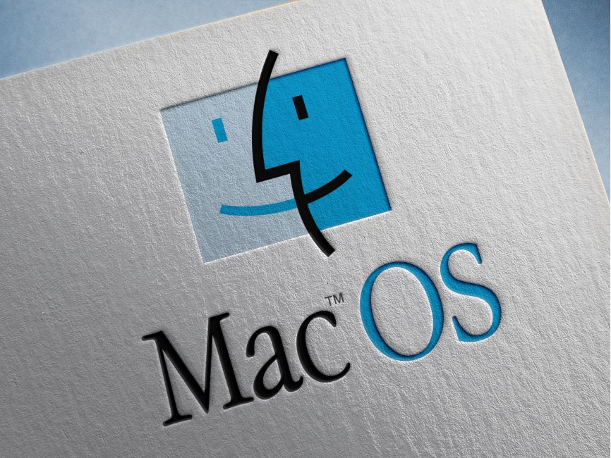

mac-os
Links:

mac-os-x 10.0 (cheetah)
Mac OS X 10.0 (code named Cheetah) is the first major release and version of macOS, Apple's desktop and server operating system. Mac OS X 10.0 was released on March 24, 2001 for a price of US$129. It was the successor of the Mac OS X Public Beta and the predecessor of Mac OS X 10.1 (code named Puma).
Mac OS X 10.0 was a radical departure from the classic Mac OS and was Apple's long-awaited answer for a next generation Macintosh operating system. It introduced a brand new code base completely separate from Mac OS 9's as well as all previous Apple operating systems, and had a new Unix-like core, Darwin, which features a new memory management system. Unlike releases of Mac OS X 10.2 to 10.8, the operating system was not externally marketed with the name of a big cat.
mac-os-x 10.1 (puma)
Mac OS X 10.1 (code named Puma) is the second major release of macOS, Apple's desktop and server operating system. It superseded Mac OS X 10.0 and preceded Mac OS X 10.2. Version 10.1 was released on September 25, 2001 as a free update for Mac OS X 10.0 users. The operating system was handed out for no charge by Apple employees after Steve Jobs' keynote speech at the Seybold publishing conference in San Francisco. It was subsequently distributed to Mac users on October 25, 2001 at Apple Stores and other retail stores that carried Apple products.
mac-os-x 10.2 (jaguar)
Mac OS X Jaguar (version 10.2) is the third major release of macOS, Apple's desktop and server operating system. It superseded Mac OS X 10.1 and preceded Mac OS X Panther. The operating system was released on August 23, 2002 either for single-computer installations, and in a "family pack," which allowed five installations on separate computers in one household.[3] Jaguar was the first Mac OS X release to publicly use its code name in marketing and advertisements.
mac-os-x 10.3 (panther)
Mac OS X Panther (version 10.3) is the fourth major release of macOS, Apple's desktop and server operating system. It followed Mac OS X 10.2 and preceded Mac OS X Tiger. It was released on October 24, 2003.
mac-os-x 10.4 (tiger)
Mac OS X Tiger (version 10.4) is the fifth major release of macOS, Apple's desktop and server operating system for Mac computers. Tiger was released to the public on April 29, 2005 for US$129.95 as the successor to Mac OS X 10.3 Panther. Some of the new features included a fast searching system called Spotlight, a new version of the Safari web browser, Dashboard, a new 'Unified' theme, and improved support for 64-bit addressing on Power Mac G5s. Mac OS X 10.4 Tiger offered a number of features, such as fast file searching and improved graphics processing, that Microsoft had spent several years struggling to add to Windows with acceptable performance.
Mac OS X 10.4 Tiger was included with all new Macs, and was also available as an upgrade for existing Mac OS X users, or users of supported pre-Mac OS X systems. The server edition, Mac OS X Server 10.4, was also available for some Macintosh product lines. Six weeks after its official release, Apple had delivered 2 million copies of Mac OS X 10.4 Tiger, representing 16% of all Mac OS X users. Apple claimed that Mac OS X 10.4 Tiger was the most successful Apple OS release in the company's history.[5] At the WWDC on June 11, 2007, Apple's CEO, Steve Jobs, announced that out of the 22 million Mac OS X users, more than 67% were using Mac OS X 10.4 Tiger.
Apple announced a transition to Intel x86 processors during Mac OS X 10.4 Tiger's lifetime, making it the first Apple operating system to work on Apple–Intel architecture machines. The original Apple TV, released in March 2007, shipped with a customized version of Mac OS X 10.4 Tiger branded "Apple TV OS" that replaced the usual GUI with an updated version of Front Row.
mac-os-x 10.5 (leopard)
Mac OS X Leopard (version 10.5) is the sixth major release of macOS, Apple's desktop and server operating system for Macintosh computers. Leopard was released on October 26, 2007 as the successor of Mac OS X 10.4 Tiger, and is available in two editions: a desktop version suitable for personal computers, and a server version, Mac OS X Server. It retailed for $129[2] for the desktop version and $499 for Server.[8] Leopard was superseded by Snow Leopard (version 10.6) in 2009. Leopard is the final version of macOS to support the PowerPC architecture as Snow Leopard functions solely on Intel based Macs.
According to Apple, Leopard contains over 300 changes and enhancements compared to its predecessor, Mac OS X Tiger,[9] covering core operating system components as well as included applications and developer tools. Leopard introduces a significantly revised desktop, with a redesigned Dock, Stacks, a semitransparent menu bar, and an updated Finder that incorporates the Cover Flow visual navigation interface first seen in iTunes. Other notable features include support for writing 64-bit graphical user interface applications, an automated backup utility called Time Machine, support for Spotlight searches across multiple machines, and the inclusion of Front Row and Photo Booth, which were previously included with only some Mac models.
Apple missed Leopard's release time frame as originally announced by Apple's CEO Steve Jobs. When first discussed in June 2005, Jobs had stated that Apple intended to release Leopard at the end of 2006 or early 2007.[10] A year later, this was amended to Spring 2007;[11] however on April 12, 2007, Apple issued a statement that its release would be delayed until October 2007 because of the development of the iPhone.
mac-os-x 10.6 (snow leopard)
Mac OS X Snow Leopard (version 10.6) is the seventh major release of macOS, Apple's desktop and server operating system for Macintosh computers.
Snow Leopard was publicly unveiled on June 8, 2009 at Apple’s Worldwide Developers Conference. On August 28, 2009, it was released worldwide,[2] and was made available for purchase from Apple's website and retail stores at the price of US$29 for a single-user license. As a result of the low price, initial sales of Snow Leopard were significantly higher than that of its predecessors whose price started at US$129.[10] The release of Snow Leopard came nearly two years after the launch of Mac OS X Leopard, the second longest time span between successive Mac OS X releases (the time span between Tiger and Leopard was the longest).
Unlike previous versions of Mac OS X, the goals of Snow Leopard were improved performance, greater efficiency and the reduction of its overall memory footprint. Apple famously marketed Snow Leopard as having "zero new features".[11] Its name signified its goal to be a refinement of the previous OS X version, Leopard.[12] Much of the software in Mac OS X was extensively rewritten for this release in order to take full advantage of modern Macintosh hardware and software technologies (64-bit, Cocoa, etc.). New programming frameworks, such as OpenCL, were created, allowing software developers to use graphics cards in their applications. This was also the first Mac OS release since System 7.1.1 that does not support Macs using PowerPC processors, as Apple dropped support for them and focused on Intel-based products.[2] As support for Rosetta was dropped in Mac OS X Lion, Snow Leopard is the last version of Mac OS X that is able to run PowerPC-only applications.
Though the final release only supports Intel processors, two development builds that supported PowerPC processors are known to exist, builds 10A96 and 10A190.[13][14][15]
Snow Leopard was succeeded by Mac OS X Lion (version 10.7) on July 20, 2011.[16] For several years, Apple continued to sell Snow Leopard at its online store for the benefit of users that required Snow Leopard in order to upgrade to later versions of OS X. Snow Leopard was the last version of Mac OS X to be distributed primarily through optical disc, as all further releases were mainly distributed through the Mac App Store introduced in the Snow Leopard 10.6.6 update.[17]
Snow Leopard was the last release of Mac OS X to support the 32-bit Intel Core Solo and Intel Core Duo CPUs. Because of this, Snow Leopard still remained somewhat popular alongside Mac OS X Lion, despite its lack of continued support,[18] mostly because of its ability to run PowerPC-based applications.[citation needed]
Snow Leopard was also the last release of Mac OS X to ship with a welcome video at first boot after installation.[19] Reception of Snow Leopard was positive.
mac-os-x 10.7 (lion)
OS X Lion,[5][6][7] also known as Mac OS X Lion,[8] (version 10.7)[9] is the eighth major release of macOS, Apple's desktop and server operating system for Macintosh computers.
A preview of Mac OS X 10.7 Lion was publicly shown at the "Back to the Mac" Apple Special Event on October 20, 2010. It brought many developments made in Apple's iOS, such as an easily navigable display of installed applications, to the Mac, and includes support for the Mac App Store, as introduced in Mac OS X Snow Leopard version 10.6.6.[10][11] On February 24, 2011, the first developer's preview of Lion (11A390) was released to subscribers to the Apple Developer program.[12] Other developer previews were subsequently released, with Lion Preview 4 (11A480b) being released at WWDC 2011.[13]
Lion was released to manufacturing on July 1, 2011,[14] followed by its final release via the Mac App Store on July 20, 2011. Apple reported over one million Lion sales on the first day of its release.[15] As of October 2011, Mac OS X Lion had sold over six million copies worldwide.[16]
Lion is the final release whose development was overseen by Bertrand Serlet, considered the "founding father of Mac OS X"
mac-os-x 10.8 (mountain lion)
OS X Mountain Lion (version 10.8) is the ninth major release of macOS, Apple Inc.'s desktop and server operating system for Macintosh computers. OS X Mountain Lion was released on July 25, 2012 for purchase and download through Apple's Mac App Store, as part of a switch to releasing OS X versions online and every year, rather than every two years or so. Named to signify its status as a refinement of the previous OS X version, Lion, Apple's stated aims in developing Mountain Lion were to allow users to more easily manage and synchronise content between multiple Apple devices and to make the operating system more familiar.
The operating system gained the new malware-blocking system Gatekeeper and integration with Apple's online Game Center and iCloud services, while the Safari web browser was updated to version 6. As on iOS, Notes and Reminders became full applications, separate from Mail and Calendar, while the iChat application was replaced with a version of iOS's Messages. Mountain Lion also added a version of iOS's Notification Center, which groups updates from different applications in one place. Integrated links allowing the user to rapidly transfer content to Twitter were present in the operating system from launch. Facebook integration was also planned but unfinished at launch date. It was released as a downloadable update later.
OS X Mountain Lion received positive reviews, with critics praising Notification Center, Messages, and speed improvements over Mac OS X Lion, while criticizing iCloud for unreliability and Game Center for lack of games. Mountain Lion sold three million units in the first four days, and has sold 28 million units as of June 10, 2013, making it Apple's most popular OS X release. Mountain Lion was the last paid upgrade for an OS X major release, with OS X Mavericks and later being free.
mac-os-x 10.9 (mavericks)
OS X Mavericks (version 10.9) is the tenth major release of macOS, Apple Inc.'s desktop and server operating system for Macintosh computers. OS X Mavericks was announced on June 10, 2013, at WWDC 2013, and was released on October 22, 2013 worldwide.
The update emphasized battery life, Finder improvements, other improvements for power users, and continued iCloud integration, as well as bringing more of Apple's iOS apps to OS X. Mavericks, which was named after the surfing location in Northern California,[4] was the first in the series of OS X releases named for places in Apple's home state; earlier releases used the names of big cats.[5][6]
OS X Mavericks was the first OS X major release to be a free upgrade and the second overall since Mac OS X 10.1 "Puma"
mac-os-x 10.10 (yosemite)
OS X Yosemite (/joʊˈsɛmɪti/ yoh-SEM-it-ee; version 10.10) is the eleventh major release of macOS, Apple Inc.'s desktop and server operating system for Macintosh computers.
OS X Yosemite was announced and released to developers on June 2, 2014, at WWDC 2014 and released to public beta testers on July 24, 2014. Yosemite was released to consumers on October 16, 2014.[4] Following the Northern California landmark-based naming scheme introduced with OS X Mavericks, Yosemite is named after the national park.